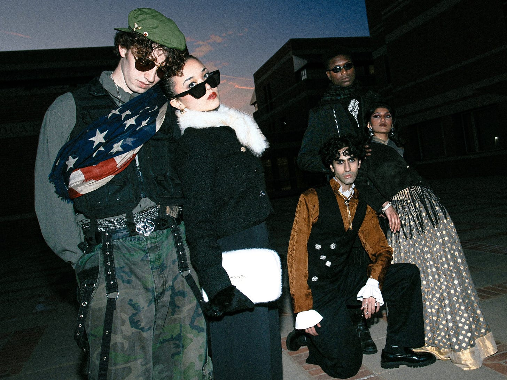
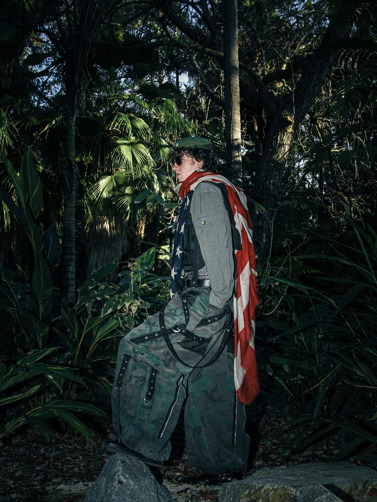
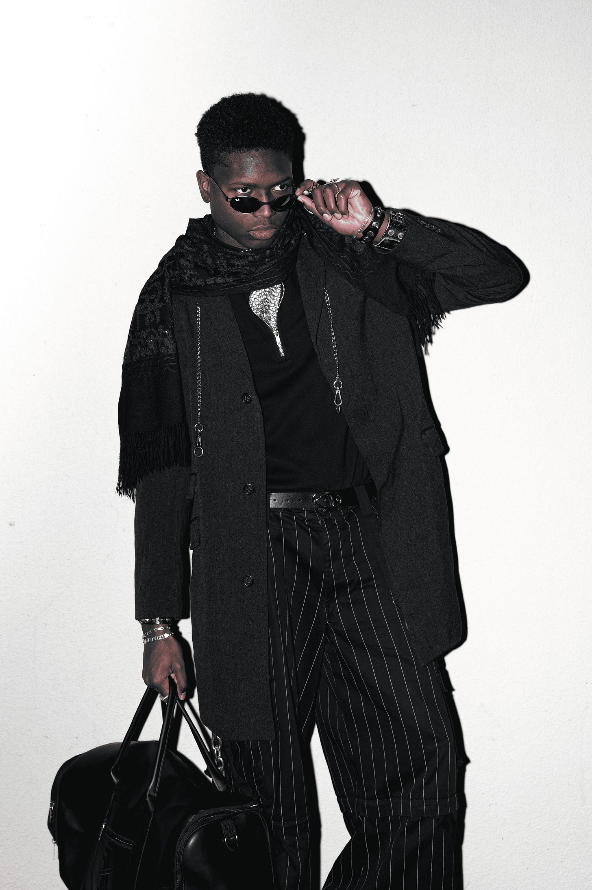

A uniform is the world’s fastest sentence. Before you speak, it speaks for you. Brass buttons at dawn. Navy pleats in a school corridor. Scrubs sliding through fluorescent light, redolent of antiseptic and burnt coffee. The same impulse appears in different fabrics: to consecrate the body and grant it a station within a social order.
We live in an age that worships individuality as a kind of civic religion, yet we still retreat to templates. Sometimes from devotion, sometimes from fatigue, sometimes from the desire to be understood without narration. Uniforms are social architecture: a shared vocabulary that travels across rooms and borders. I have always been fascinated by the way uniformity can feel like sanctuary and suppression in the same breath of fabric — relief and restraint, belonging and erasure. This essay traces that paradox through psychology, culture, and fashion, asking what uniforms grant us, what they cost us, and why we keep choosing them anyway.

The Social Architecture of Uniforms
Uniforms make the abstract corporeal by stitching rules, ranks, and belonging into something the body can wear. In precarious rooms, they promise order; in crowded institutions, they reduce the burden of deciding how to be read. Hospitals, airports, schools, courts, and corporations all rely on versions of the same visual shorthand. We know who to ask, whom to wait for, and where authority seems to sit before anyone says a word. The architecture of the institution is mirrored in the body, turning fabric into a kind of map. This is why uniforms can feel reassuring even to people who dislike rules: they reduce ambiguity. In unfamiliar spaces, visual order spares us a series of small negotiations about who belongs where and what is expected of whom.
But repetition never produces perfect sameness. A rolled sleeve over a blazer, a skirt worn shorter than intended, a bold lip, an untucked shirt: small deviations let the self breathe inside the standard. These gestures are not always rebellion. Often they are inhabitation — ways of making a prescribed form livable. That tension helps explain why the uniform endures. We reach for structure when the world feels too wide, and for symbols when language feels inadequate.
The Psychology of the Uniformed Mind
The mind is a savant of shortcuts. Faced with more information than it can consciously process, it relies on categories, cues, and expectations to make other people legible. Clothing is unusually potent because it arrives already saturated with implication. A suit may suggest competence or authority; scrubs suggest care and expertise; a school blazer suggests affiliation and rules. Even informal “uniforms” — boardroom minimalism, tonal athleisure, downtown streetwear — allow people to recognize communities and roles at a glance.
What we wear can also shape how we understand ourselves. Research on enclothed cognition has suggested that clothing can influence psychological processes when a garment carries a culturally learned meaning and the wearer experiences that meaning while wearing it. A lab coat, for example, does not possess magical properties; its effect depends on what the coat represents. The larger idea is more interesting than the garment itself: identity can be partly performed into being. We often imagine personality as something stable that clothing merely expresses, but the relationship can run in both directions. Dress can become a cue for posture, attention, confidence, restraint, or role-consistent behavior, especially when the wearer already shares the cultural meaning attached to the garment.
Conformity works through a related mechanism. Deviating from a group can create social friction, while alignment offers the reassurance of belonging. Uniforms make that alignment visible. At their best, they coordinate people around a shared purpose. At their worst, they can make sameness feel synonymous with safety and difference feel like risk. Political movements and rigid institutions have repeatedly exploited that logic, using standardized appearance not merely to organize bodies but to communicate obedience, solidarity, and acceptable identity.
Tenderness exists here too, not despite the uniform but because of it, in the small comforts of repetition. Nani’s sarees have always made the world feel more traversable, as if her familiar silhouette were proof that the day would hold. The same saree draped with practiced fidelity, bangles soft against skin, a faint sillage of soap and chai following her through the rooms. My leotard does something similar in a different key. I pull it on before ballet and my spine finds its axis; my limbs remember their old grammar — plié and tendu — as if the body never truly forgets. Repetition can become ritual, and ritual can make uncertainty feel containable.
Uniforms Through Time: A Brief History
The Renaissance Uniform
In medieval and early modern Europe, dress could be regulated by law. Sumptuary rules restricted who could wear particular fabrics, furs, colors, and forms of ornament, making status visible before it was spoken. Renaissance finery intensified that visual hierarchy. Brocade, pearls, structured silhouettes, and elaborate tailoring did more than display taste; they made privilege readable. Clothing was not simply decoration but a public grammar of rank. The point was not only that some fabrics were expensive. Their visibility mattered. A hierarchy works more efficiently when it can be recognized at a glance, and clothing made social distance portable. Rank could enter a room before its wearer spoke.
Modern fashion repeatedly returns to that grammar. Designers have revived ruffs, corsetry, brocade, exaggerated hips, and courtly proportions because the Renaissance silhouette still carries an aura of ceremony and power. What changes is the meaning. A form once used to stabilize hierarchy can be repurposed as theatrical excess, gender play, or personal spectacle. The silhouette survives because its social memory survives with it. Alexander McQueen, Valentino, Chanel, and others have returned to ruffs, corseted structures, and courtly exaggeration not as archaeological reconstruction, but as a way of borrowing the emotional force of hierarchy. The past becomes material: reverence, restriction, spectacle, and excess cut into a contemporary shape.
The Old English Uniform
By the eighteenth and nineteenth centuries, British tailoring offered another vocabulary of status. The tailcoat, school tie, blazer, and club crest became markers of class and affiliation. Their power came from repetition: a particular cut or stripe could quietly indicate that the wearer belonged to a certain school, profession, institution, or social world. The phrase ‘old school tie’ still survives as shorthand for the networks built around those signals.
Contemporary designers continue to borrow the codes. Shrunken suits, cricket sweaters, blazers, and school-uniform references appear on runways and in subcultures precisely because the originals were never neutral. They carry inherited associations of discipline, privilege, youth, and belonging. Fashion can honor those associations, satirize them, or turn them inside out, but it rarely escapes them. The school uniform is especially useful because almost everyone understands its promise and its threat: discipline, youth, hierarchy, belonging. Punk can tear it apart; luxury can refine it; nostalgia can romanticize it. The code remains readable even when the wearer refuses its original meaning.
The Military Blueprint
Few institutions have used clothing as deliberately as the military. Standardized dress converts individuals into a visible unit: one body among many, marked by the same colors, shapes, and insignia. Rank and role can be encoded directly onto the garment. The effect is practical, but also psychological. The wearer is reminded that the uniform represents a purpose larger than the self, while the observer is given immediate cues about authority and belonging.

That blueprint migrated into civilian life through police, postal, aviation, medical, and school uniforms, and military design migrated into fashion with it. The trench coat is the classic example: developed from military outerwear and later transformed into a civilian staple. Peacoats, epaulettes, camouflage, braided jackets, and officer-style tailoring followed similar paths. The paradox is enduring: garments designed to enforce conformity are repeatedly adopted as expressions of individuality. A punk in surplus and an executive in a naval-inspired coat may be borrowing from the same visual language for entirely different reasons.
The 1980s Uniform
No decade embraced clothing as armor more enthusiastically than the 1980s. Power dressing turned the boardroom into a stage of broad shoulders, sharp tailoring, and controlled polish. Designers such as Giorgio Armani helped define the era, while popular culture turned the power suit into shorthand for ambition. On women, that silhouette carried an additional charge: it negotiated the relationship between femininity and authority in spaces historically coded as masculine.
The power suit mattered because it demonstrated that a uniform does not need to be officially mandated to regulate behavior. Professional communities develop their own expectations, and people learn to dress into them. Clothes can become a rehearsal for a role: executive, lawyer, politician, creative director. The uniform tells the room what to expect, but it can also tell the wearer how to occupy it. That makes professional dress a form of impression management as much as fashion. A person may choose the suit because the institution expects it, because clients trust it, because peers recognize it, or because the wearer feels more capable inside its architecture. Those motives can coexist.
The Meta/Superhero Uniform
Not all uniforms are inherited from institutions; some are conjured from myth. The superhero costume works because it compresses an identity into a symbol. A cape, mask, bodysuit, or chest emblem does not merely decorate a character — it announces a code. The individual becomes instantly legible as hero, villain, vigilante, outsider.
The mask is especially revealing. By hiding the person, it can enlarge the symbol. Fashion designers have played with the same tension, from full-face coverings that subordinate the model to the garment to runway looks that transform the body into an archetype. In a culture obsessed with visibility, facelessness can itself become a performance of power. The uniform is no longer simply about belonging to a group; it can become a way of becoming an idea. Superhero dress makes that process unusually explicit, but ordinary life contains softer versions of the same transformation. We dress for the person we are expected to be, the person we want others to see, and sometimes the person we are trying to convince ourselves we can become.
The Cultural Uniform
Across the world, garments can function as repositories of culture, identity, and collective memory. A saree can communicate region, occasion, family tradition, or personal style. A kimono can encode seasonality and formality through material and motif. The Palestinian keffiyeh carries a political and historical significance that extends far beyond the scarf itself. These garments resist any simple definition as ‘uniforms,’ yet they demonstrate the same underlying principle: clothing can situate a person within a larger narrative before that narrative is spoken.
For diasporic communities, that relationship can become especially intimate. A familiar garment may function as continuity — a portable connection to home, family, or inherited ritual. But cultural clothing also raises questions about who gets to borrow which symbols and under what conditions. Respectful exchange depends on context, knowledge, and relationship. The difference between appreciation and extraction is not always visible in the garment itself; it often lives in the story of how it got there. That is why cultural clothing sits uneasily inside the language of the uniform. It can create belonging without demanding sameness, and carry collective memory without erasing the individual. The same saree, kimono, or scarf may mean something different on another body, in another place, or at another moment in a life.
The Luxury Uniform
Luxury has its own etiquette of visibility. The point is often not to announce wealth to everyone, but to be recognized by the people who know the code. A particular bag shape, watch, bracelet, fabric, or cut can function as a quiet credential. In that sense, luxury is a social uniform built from scarcity and recognition rather than official rules.
Chanel helped define one version of this grammar by adapting practical menswear and maritime references into a new language of feminine elegance. Later status objects — a Van Cleef motif, a Cartier bracelet, an Hermès bag — condensed the same process into accessories. Their psychological value does not reside only in materials or craftsmanship. It also resides in what ownership communicates: taste, access, continuity, aspiration, membership. The luxury uniform works because enough people agree on what the symbols mean. Sociologically, this is status signaling stripped of the need for a literal badge. The symbol succeeds when recognition is selective: obvious enough for the intended audience, quiet enough to preserve the performance of effortlessness. Luxury therefore depends as much on shared literacy as on price.
That agreement is why a uniform can exist without anyone issuing it. Social groups teach their members what counts as effortless, appropriate, tasteful, or excessive. Eventually those rules can become embodied: sunglasses pushed into the hair, a scarf tied a certain way, the practiced indifference of an object treated as ordinary because its wearer wants the object — and the status it carries — to look natural.
The Futurist Uniform
For more than a century, designers and storytellers have imagined the uniform of the future. The recurring motifs are revealing: jumpsuits, metallic surfaces, modular garments, technical fabrics, and silhouettes that promise efficiency. Space-age designers such as Andre Courrèges and Paco Rabañne treated new materials as evidence that society itself might be remade. Their clothes looked futuristic not simply because they were strange, but because they proposed a different relationship between bodies, technology, and everyday life.

Contemporary designers such as Iris van Herpen push that idea through 3D printing, laser cutting, and materials that appear almost biological. Streetwear offers a more utilitarian version through techwear: dark palettes, transformable layers, weather-resistant fabrics, concealed pockets, anonymity. Utopian visions emphasize cleanliness and coordination; dystopian visions emphasize protection and survival. Both imagine that the future will ask the body to become more adaptable. That fantasy reveals a persistent hope about uniforms: that the right design might eliminate friction between the person and the environment. Clothing would no longer merely signal a role; it would actively help the wearer perform it, protecting, sensing, regulating, and responding in real time.
The most radical future uniform may be one that is personalized rather than standardized: a garment generated to fit a single body, regulate temperature, respond to movement, or change appearance by context. That would seem to dissolve the uniform’s central contradiction. Yet even infinite customization would still operate through shared codes. We would continue using clothing to tell one another what kind of world we believe we inhabit.
And so the uniform keeps moving, century to century, like a pattern that refuses to die. It leaves the court and reappears in a classroom. It migrates from the trench to the runway, from the boardroom to the screen, from inherited cloth to algorithmic sheen. Somewhere in that long relay, we are still doing the same human thing: arranging ourselves into a social grammar.
Maybe that is the quiet truth beneath every uniform. History may draft the silhouette, institutions may assign it meaning, and groups may teach us how to read it — but the wearer is never entirely passive. We alter the hem, roll the sleeve, inherit the ritual, reject the code, or turn it into something new. The uniform speaks before we do, but it never gets the final word.
Selected Sources & Further Reading
Because this article is published as commentary, these sources are provided for readers who want to explore the empirical and historical material that informs the discussion. They are not intended as a comprehensive literature review.
- Adam, H., & Galinsky, A. D. — Enclothed cognition (Journal of Experimental Social Psychology)
- Berns et al. — Neural correlates of social conformity and independence (Neuron)
- Encyclopædia Britannica — Normative influence and conformity
- University of Michigan-Dearborn — Sumptuary laws and dress regulation
- National Army Museum — Military clothing and the trench coat’s fashion legacy
- The Metropolitan Museum of Art — Superheroes: Fashion and Fantasy
- Wales Bonner — About / design practice
- Iris van Herpen — Voltage collection
- High Museum of Art — Iris van Herpen: Transforming Fashion
- Vogue — Working Girl and the visual language of professional power dressing